Problem 3. (33 points) In the circuit shown below, 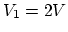,
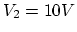,
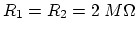, 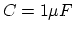. Switch 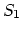 closes at 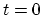,
switch 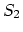 closes at 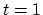 second. Assume initially the voltage across
the capacitor is 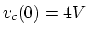. Find voltage 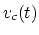 for the following
two time periods:
Sketch the plots of these two voltages for 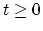.
Hints: For second period, assume 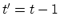, and use the solution of
the first period at as the initial value. In the final expression,
replace 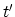 by 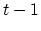.
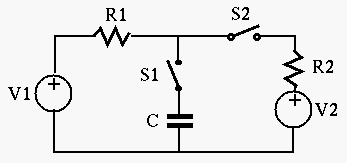